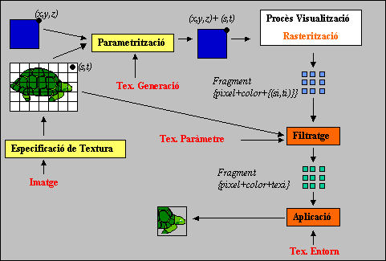

Textures.
Aplicació de textures planes
En aquesta secció ens centrarem en l'estudi de la texturació de
polígons i malles de polígons amb textures planes (bi-dimensionals)
sota la perspectiva de la utilització d'OpenGL.
L'aplicació de la textura es realitza utilitzant mapejat invers
dins de la determinació de visibilitat amb
Z-buffer. La figura següent esquematitza els processos (blocs
taronja) que és necessari incorporar al Procés de Visualització per a
permetre les funcionalitats de les textures, així com les
inicialitzacions (blocs en groc) i els paràmetres específics requerits
(en vermell). A continuació s'introdueixen els esmentats processos que
seran detallats en les subseccions següents.
NOTA.

- Especificació de
Textura. Procès encarregat de crear en memòria una entitat de
tipus Textura. Requereix com a paràmetres la seva dimensió,
resolució i el tipus d'informació per cada texel. En l'enllaç anterior
trobareu més informació i exemples concrets en OpenGL.
- Parametrització o Generació de Coordenades de Textura. És
el procés encarregat d'assignar coordenades de textura normalitzades
als vèrtexs del polígon o de la malla de polígons. Imagineu que teniu
un poliedre (per exemple un cilindre aproximat per cares planes) i
desitjeu mapar sobre cadascun dels seus triangles un trosset d'una
textura. Seria un procediment similar a quan volem embolicar un
objecte tridimensional amb un paper; què ens passa? que o bé ens sobre
paper que hem de retallar/doblegar o ens falta i requeririem
estirar-lo. Matemàticament, la qüestió a resoldre és trobar una funció
F que assigni les coordenades bi-dimensionals de la textura als
vèrtexs de l'objecte que estan definits en tres dimensions, és a dir,
que emboliqui acceptablement (d'acord amb les nostres
intencions). Requerim calcular una funció:
F tq F(x,y,z)=(s,t) i s i
t estan definits en [0,1]
OpenGL ofereix dos procediments de parametrització:
- Parametrització
Directa. S'assignen directament les coordenades de textura als
vèrtexs dels polígons. Usualment s'utilitza per a mapar textures en
polígons i l'assignació l'explicita de manera interactiva l'usuari en
la fase de modelatge de l'escena. Alternativament, és possible pensar
en definir una funció que assigni directament la textura en funció de
les coodenades dels vèrtexs. En l'enllaç trobareu informació
addicional de tècniques d'assignació i les comandes concretes
d'OpenGL.
- Parametrització
Automàtica. En funció de la informació associada als vèrtexs de
l'objecte, OpenGL té determinat un conjunt de funcions que
automàticament calculen les seves coordenades de textura. En
l'enllaç anterior trobareu més informació sobre l'efecte d'escollir
entre diferents funcions i les comandes concretes d'OpenGL. Una
d'aquestes funcions (GL_SPHERE_MAP) permet simular reflexions
especulars de l'entorn sobre objectes reflectors (és l'anomenat
environment mapping).
- Mapat invers de textures. Durant la rasterització dels
polígons es generen coordenades de textura específiques per a cada
pixel interior al polígon. A tal efecte s'interpolen les coordenades
de textura dels vèrtexs dels polígons en un procés similar a com
s'interpola el color en el colorat
de Gouraug, és a dir, segons la separació entre els pixels en què
es projecten els vèrtexs. Recordeu que en OpenGL aquesta informació
s'emmagatzema en una entitat anomenada Fragment en que es guarda tot el que es requereix conèixer d'un pixel:
coodenades, profunditat, color, coordenades de textura,... Les
coordenades de textura es calculen pels 4 vèrtexs que limiten el pixel
{(xd,yd)(xd+1,yd),(xd+1,yd)(xd,yd+1)}
- Filtratge. Aquest
procés consisteix en assignar al Fragment un atribut/valor
concret de la textura en concordància amb les coordenades de textura
dels seus vèrtexs. Segons la parametrització efectuada i la projecció
dels polígons pot succeir que a cada vèrtex del fragment li
correspongui una coordenada diferent, o a tots la mateixa i, fins i
tot, que a algun/tots tinguin valor fora del rang [0,1]. Diferents
solucions a aquests problemes: assignar el valor del texel més proper,
assignar el valor promig d'un conjunt de texels,... produeixen
diferents efectes en la texturació resultant. En l'enllaç trobareu
les possibilitats que ofereix OpenGL i les seves limitacions.
- Aplicació. Aquest
darrer procés consisteix en combinar el color del fragment amb
l'atribut de textura calculat. El més usual és la substitució del
color difós (r,g,b,α) pel color de la textura. En l'enllaç
trobareu les possibilitats de combinació que ofereix OpenGL.
Exercici 4.1: A
continuació trobareu l'applet amb el que heu anat fent proves al llarg
de tot el tema. Com sabeu les pestanyes són auto-explicatives del seu
funcionament, però si teniu dubtes i no us recordeu del seu
funcionament aneu aquí. Us
aconsellem que encara que hagueu passat per tots els apartats prèvis i
nomès hagueu estudiat l'apartat actual, jugeu a activar/desactivar les
diferents opcions i analitzeu experimentalment el seu resultat. Una
prova que encara no us hem suggerit és seleccionar
l'objecte=retall. Ara podeu editar un polígon qualsevol en la finestra
de l'esquerra i li seran associades les coordenades de textura
adients d'acord amb el posicionament dels vèrtexs a sobre de la
textura. Proveu de fer un polígon còncau. Noteu que OpenGL només
textura correctament polígons convexes.